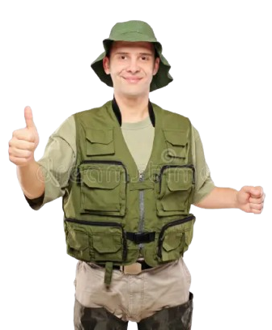

^ clique ici ^
Le 8ᵉ continent de plastique, c’est une énorme poubelle flottante dans le Pacifique, trois fois la taille de la France. 🌊😵
Les déchets plastiques détruisent les écosystèmes marins, tuent des milliers d’animaux, et finissent dans notre chaîne alimentaire.
C’est un problème sérieux qui affecte tout le monde. Réduire le plastique, recycler, et agir ensemble, c’est vital pour protéger nos océans et nos enfants. 🐢💔🐒
Le pecheur content car il va pecher des poissons qui n'auront pas mangé de plastoc grace à vous !!
